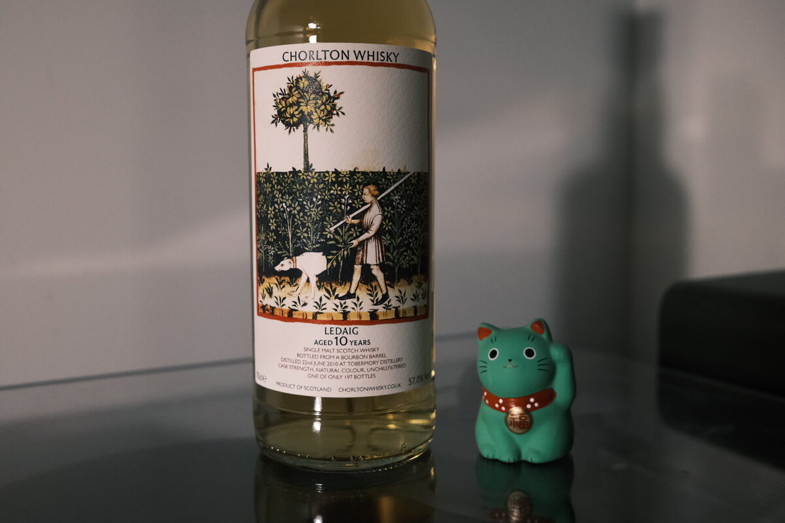

Ledaig 2010 Chorlton 10 years 57% (bourbon barrel)
Final dram of the Chorlton night. Ledaig, of Tobermory fame. Or should that be Tobermory, of Ledaig fame? Anyway, absolute heavyweight. Tasted virtually with David Bennett (Chorlton) and the Whisky and Alement team.
Final bit of Chorlton trivia: David bottles all of his stuff to his own tastes. From the source: highland style or peated, no odd finishes or wine casks. Very orthodox stuff.
Colour Light gold.
Nose Fish oil. Meaty. Dirty, rubbery, oily, phenolic peat and smoke. Spices, but not the typical: chilli, cayenne, black pepper, fennel. Dehydrated apples and apricots (cocktail garnishes!). Cherries and lychees, berry coulis. Acute minerality. Vanilla caramel and roasted hazelnuts.
Palate Brown sugar sweetness on the attack. Then into dirty peat. Rubber, tire fires. Vegetation. Ash and soot. But then into cream, full woodiness. Floral. Grassy. Balances well with the umami on the nose. Dirt again. Smoked pears. Malt. A little nutty, peanuts? The peat’s back.
Finish Excuse the poetry: you’re on the beach, and you’ve lit a little peat fire in your heart. Deeply warming. Coastal, salty. Belching smoke and dirty peat. Chocolate and peanuts: Whittaker’s Peanut Slab. A little citric at the very end. Very long.
Comments Filthy peat and belching smoke. A heavy truck passing by. A campfire on the beach. A complete pleasure to drink. 90/100.

Posted by Dominic on 05 May 2021